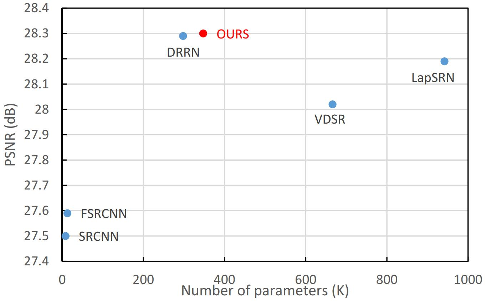
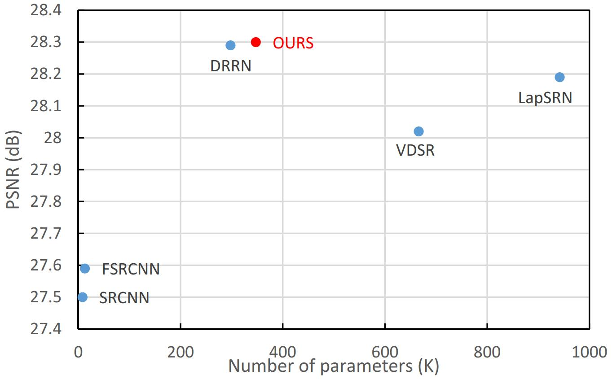
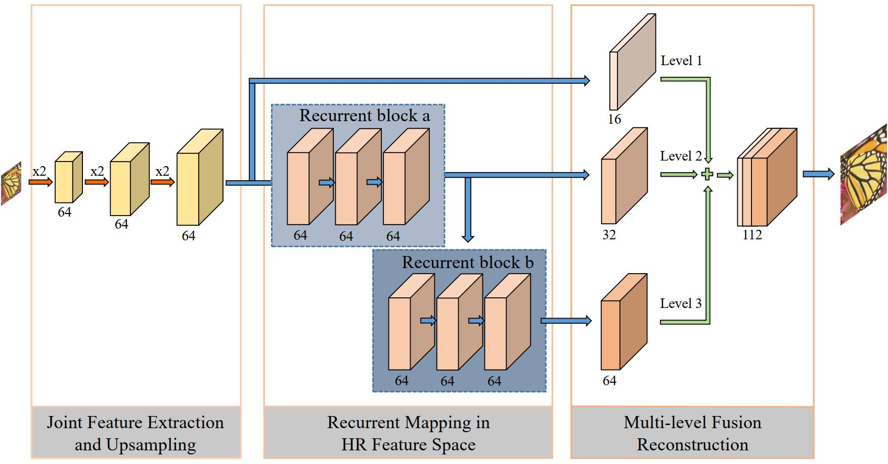

TMM2018DRFN: Deep Recurrent Fusion Network for Single Image
|
|
 |
| |
|
|  |
Abstract
Recently, single-image super-resolution has made great progress due to the development of deep convolutional neural networks (CNNs). The vast majority of CNN-based models use a predefined upsampling operator, such as bicubic interpolation, to upscale input low-resolution images to the desired size and learn nonlinear mapping between the interpolated image and ground truth high-resolution (HR) image. However, interpolation processing can lead to visual artifacts as details are over smoothed, particularly when the super-resolution factor is high. In this paper, we propose a deep recurrent fusion network (DRFN), which utilizes transposed convolution instead of bicubic interpolation for upsampling and integrates different-level features extracted from recurrent residual blocks to reconstruct the final HR images. We adopt a deep recurrence learning strategy and, thus, have a larger receptive field, which is conducive to reconstructing an image more accurately. Furthermore, we show that the multilevel fusion structure is suitable for dealing with image super-resolution problems. Extensive benchmark evaluations demonstrate that the proposed DRFN performs better than most current deep learning methods in terms of accuracy and visual effects, especially for large-scale images, while using fewer parameters.
Downloads
| [DRFN.pdf] | : The paper. |
| [Results.zip] | : Experimental results. |
| [Code] | : Source code. |
BibTex (DOI)